Course Description
This course provides an introduction to human factors research and applications with emphasis on mature areas such as sensation and perception and manual control. Each class will introduce some concrete human factors problem and explore theory and application relevant to solving it. The term long conceptual design assignment is intended to help maintain focus on applications to design.
Week1
Learning Objectives:
- Theoretical understanding: Develop an understanding of the historical context, disciplines, and schools of thought that led to the development of the current field of human factors engineering/psychology; Develop an acquaintance with basic elements of scientific method and decision making including tests of hypotheses, dependent and independent variables, and inferential and descriptive use of statistics.
- Apply theory and skills: Use scientific methods including selection of measures and experimental tasks to evaluate the utility of a variety of pointing devices
- Proficiency in information related skills: Learn how to conduct a critical incident-based evaluation of an interactive system and to perform a standard task analysis for such a system
Research Methods
- IV & DV
- Cause vs. Chance
- Descriptive vs. Inferential Statistics
- Null hypothesis(H0) & Experimentalhypothesis(H1)
- Hypothesis Testing
- Statistical Significance & Practical Significance
- Graph & Interpetation
Goals of System Evaluation
- Functionality
- Can it do what it is supposed to do?
- Usability
- Does it make the task easier?
- Diagnosticity
- Does it pinpoint what is wrong?
- User Population
- Who are they?
- What are their goals?
- What do they already know how to do?
- Ask, don’t assume!
- Research Objectives
- Generalizability
- Precision
- Realism
- Usability Testing
- Design an Experiment
Two Models for Human Factors
- System component (computer)
- Embedded organism (cybernetic)
Task Analyses
为了研究如何使系统更好地和人的能力相匹配所进行的一种描述人机交互的方法
- Sequential
任务的顺序和不同任务在时间序列上的关系- Procedural
- Therp
- Hierarchical
描述一个大的任务如何由子任务组成以及这些任务又是如何联系起来体现其功能的- HTA
- GOMS
- Cognitive
Evaluation
- Types of Evaluation
- Laboratory Studies
- Field Studies
- Participatory Design/Rapid Prototyping
- Brainstorming
- StoryBoarding/Wizard of Oz
- Workshops/Role Playing
- Walkthrough/Talkthrough
- Observation Evaluation
Function Allocation
每个功能由人来实现还是系统来实现
- Mandatory
- Relative value
- Cost based
- Cognitive/affective
Week2 Sensation
Learning Objectives:
- Psychophysical methods & the problem of separating bias from measurement
- Signal Detection: Perform specific calculations
- Conceptual model (associating hits, FA’s, misses, & CR with areas under the curves)
- Computational understanding (interpreting problems, using table, & finding d’)
- Vigilance - what the vigilance decrement is and how signal detection has been used to better understand it
- DESIGN: understanding of the cognitive information capabilities of humans General knowledge- wide range of sensitivity, approximately logarithmic, etc.
- Place encoding of frequency and its consequences for:
- Masking
- Threshold shift & frequency related loss, etc.
- Measurement issues
- Loudness & equal loudness contours
- SPL meters
- Articulation index, SIL, and other speech & noise issues
- Noise & annoyance
Classical Errors
Error of Habituation
- Keep on saying the same thing
Error of Anticipation - Shift to new response
Signal Detection Model
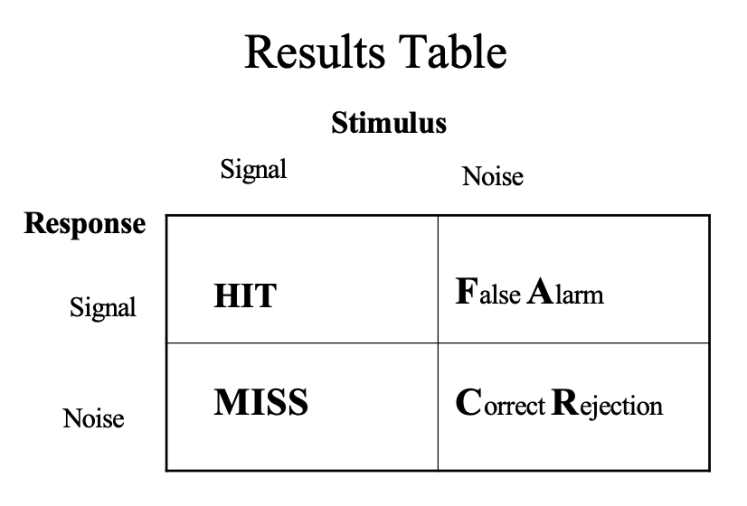
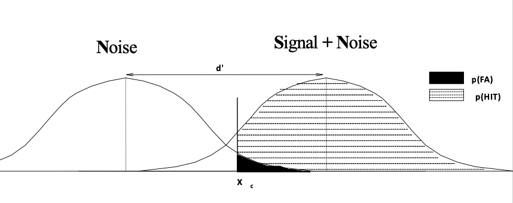
Vigilance
警报的设计必须建立在对人类的听觉加工充分了解的基础上
- Near threshold signals
- Low rate of occurrence
- Extended Watch
- Inspection(definitetrial)
- Free response time arbitrarily brokeninto intervals
- Successive(noavailablestandard)
- Simultaneous(signal to standard comparison)
Fatigue
- Sustained attention leads to fatigue
- Load on working memory to keep target in mind depletes resources
Expectancy
Remedies
Sound
Patterns of rare faction/compression of air
- Physics
- Intensity = amplitude
- Frequency = cycles(hz)
- Perception
- Loudness
- Pitch
- 强度决定响度
- 频率决定音调
- 位置决定听觉定位
- 品质由频率及其掩蔽来决定
DECIBEL
- dB(a): dB weighted by threshold equal loudness curve
- dB(c)/dB (spl): dB with no weighting
- dB(d) weighted by equal annoyance curves
Encoding Pitch by Place
Auditory Masking
the presence of tone that inhibits the perception of another tone that occurs before, at the same time, or after it.
Week3 Vision and Color
Learning Objectives:
- Even more than place perception of pitch vision is all about relative differences (contrasts) and adaptation
- The relation between what we experience and what is physically out there isn’t direct
- Good Human Factors engineering requires designing so our users don’t notice
Overview of vision
- Peripheral/central processing
- Dark Adaptation & Illusions & their relation to the structure of the eye & vision
- Visual angle & spatial frequency
- VDTs, visual fatigue, & ergonomic effects
- Color measurement Munsell color wheel vs. CIE
Rods and Cones
- 位置 location
- 视敏度 acuity（解析细节的能力）
- 敏感性 sensitivity (即使光很少，Rods也能工作)
- color sensitivity （rods 是色盲）
- adaption （rods 受光刺激的影响大）
- diffrrential wavelength sensitivity (cones对所有光敏感，rods对红光不敏感）
对比敏感度
c = (L-D) / (L+D)
color sensation
对单色进行设计，然后将颜色作为冗余编码信息提供
dark sensation
当照明条件比较差时，所有空间评率的对比度都会降低
检测
- 在很多系统中，影响作业绩效的重要因素是密切相关的两个过程：视觉搜索和物体或时间的检测
- 在视觉搜索领域，一旦某个项目被确定可能是目标，就必须对它是否是真的目标进行确认。
- d’ 反映了一个操作者从噪音中分辨出信号的能力，它等于好结果的数目除以所有结果的总和
Peripheral Processing
- Photo receptors are interconnected and can reciprocally inhibit one another
- Can be tuned for featurere cognition
Adaptation
Adaptation is a major characteristic of sensation
Week4 Reaction time
Learning Objectives:
- Subtractive&additive factors analyses of choice reaction time
- Limits&values of psychological experimentation
- Human bottleneck in choice responses
- Power law of learning
- Automaticvs.controlledresponding
- Information theoretic interpretations of reaction time
Hick’s Law
Hick’s Law holds that choice reaction time is proportional to log2 of the number of alternatives.（反应时间是log2N的函数）
RT = a + blog2N
Conventional Controls & Displays
- conventional practice in design of controls
- displays Acquire familiarity with human factors design principles and heuristics
Control
Controls are used by the human operator to communicate with the machine/device in the system. It’simportantthatcontrolsservetheirfunction. Based on:
- Ease of operation (considering population, biomechanics, etc.).
- Nature of the task (force, precision, etc.).
- Arrangement.
Basic dimensions:
- Discrete (e.g., light switch) vs. continuous (e.g., dimmer)
- Linear vs. rotary
- Unidimensional vs. multidimensional
- Isometric vs. isotonic
- Plus mass, shape, range of motion, resistance to movement.
Control Features
- Control resistance
- Elastic resistance: Spring loaded.
- Resistance increases as control gets farther from neutral.
- Gives proprioceptive feedback about control position.
- Returns to neutral when released (deadman switch).
- Frictional resistance
- Static friction for resting state, decreases when pushed.
- Sliding friction not influenced by velocity or position.
- Viscous resistance
- Increases as a function of velocity.
- Gives proprioceptive feedback about speed.
- Promotes smooth movement.
- Inertial resistance
- Hard to start and stop.
- Users tend to overshoot (revolving doors).
- Performance and resistance
- For frictional and inertial, the JND is 10%-20% of resting state.
- Lighter controls preferred to heavy.
- Viscous preferred to frictional.
- For continuous, inertial hurts performance;
- Elastic is the best.
- For all of these, hard-and-fast rules are not available. It’s a function of the system.
- Elastic resistance: Spring loaded.
- Control-display ratio:
- Ratio of magnitude of control adjustment to magnitude of change in display.
- Gain:
- Responsiveness of control.
Control Panels
- Location coding
- Need to be able to reliably distinguish locations.
- Vertical localization is easier than horizontal.
- Overuse of location coding is still a factor in some aircraft designs.
- Labels
- Not recommended as the sole code
- General rules for labels
- Locate labels systematically with respect to controls (all above, etc.).
- Make labels brief.
- Avoid abstract symbols; use standards.
- Attend to fonts.
- Position labels so they can be seen while the control is in use.
- Coding of controls
- Color coding
- Shape coding
- Size coding
- Texture coding.
– Coding by type of operation.
– Redundant coding: Multiple dimensions
- Control arrangements
- Grouping is important.
- Population stereotypes for control arrangements can be device specific
- Attend to the reach envelope
- Preventing accidental operation
- Specific Controls
- Hand operated controls
- Foot operated controls
- Specialized controls
Visual Displays
Display - anything that conveys information
- Requirements:
- Compatibility to senses
- Language compatibility
- Right info at the right time
- Types of information to display:
- Instructional
- Command - direct orders
- Advisory
- Historical/predictive
- Answers
- Functions of Dynamic Visual
Displays- Continuous System Control
- System Status Monitoring
- Briefing
- Search and Identification
- Decision Making
- Visual Display Technology
- Mechanical
- Electronic
- Optical Projection
- General Display Principles
- Color
- Shape
- Coding
- Approximation
- Get attention with one display
– Present detailed info with another
- Get attention with one display
- Integration
Principles of Display Design
- Perceptual Principles
- Avoid absolute judgments
- Top-down processing （信号的显示方式尽量与人的经验相符合）
- Redundancy gain
- Discriminability
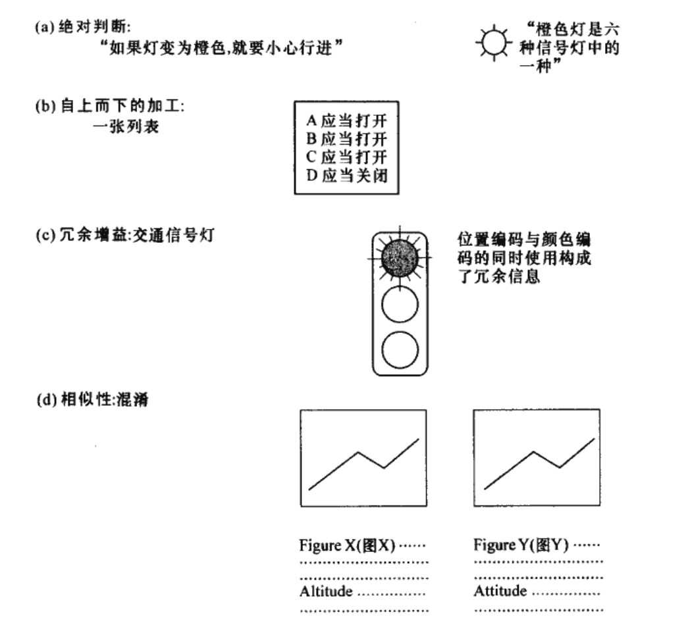
- Mental Model Principles （显示方式与操作员的心理模型一致，有助于提高正确操作）
- Pictorial realism （形如其表）
- Principle of the moving part （运动一致）
- Principles Based on Attention
- Minimizing information access costs （将访问信息的消耗降到最低）
- Proximity compatibility principle （接近相容原则）
- Principle of multiple resources （要同时对多种信息进行加工时，可以将信息的呈现方式区分开）
- Memory Principles
- Principle of predictive aiding （预测辅助原则）
- Principle of knowledge in the world （利用知识降低记忆负荷）
- Principle of consistency （一致性原则）
- Two-Valued Info
- Quantitative Information
- Qualitative readings
- Check Reading
- Situation awareness
Three Heuristics
- Minimize Information
- Promote Good C-D mappings
- Provide Feedback
Spatial & Integrative Displays
Learning Objectives:
- 6 DOF & moving & orienting in 3 space
- Problems with viewpoint & situation awareness
- Applications VR, games, & robotics – Attitude & pose
- Navigation & search
Cues to depth & distance
Use of emergent features and perceptual salience to integrate displays
- TMI and need to provide context to events
6 Degrees of Freedom (6DOF)
– Position (X,Y, Z)
– Orientation (Yaw, Pitch, Roll)
3d display on 2d panels
- Depth is often poorly represented & less discernable than other dimensions
Configural Displays
- Low level data: usually individual sensor data
- High level relation: a more global and general display of what the data means
- Emergent property or emergent feature: a pattern or shape that is created from the low level data, is recognisable and has meaning
Separable
Show each variable as a single output
Separable vs Configural vs Integral
- Separable generally makes it easier to extract low level information
- Integral Show high level information but not low level information
- Configural Arrange low level data into a meaningful form,whole is greater than the sum of the parts
- Configural makes it harder to extract low level information
Tracking (manual control)
Learning Objectives:
- Fitts’ Law Ability to apply theory and skills: Design Use Fitts’ Law to evaluate/predict pointing performance
- Theoretical understanding: Order of control
Open versus Closed Loop Systems
Tracking Terms
- Control movement
- Controlled element
- Target
- Forcing function- disturbances to target
Pursuit and Compensatory
补偿追踪与尾随追踪
- Pursuit
- Target moved
- Usually more accurate
- Compensatory
- Target fixed
- Target & control movements confounded
Fitts Law
MT(movement time) = a + blog2(2A/W)
Tracking vs. pointing
Pointing as expressed by Fitts law is a very special case of tracking.
In pointing:
- Stationary target
- No lag
- Gain is only control system parameter
Gain & C/D ratio
- Gain describes the change in the controlled element (display) corresponding to a movement of the control: gain = y/x..
- C/D ratio describes the movement of a control needed for a given change in the display: C/D = x/y
Order of Control
- 0 order: Position
- A 0 order system has no integrations between input and output
- 1 order: Velocity
- A 1 order system has one integrations between input and output
- 2 order Acceleration
- A 2 order system has two integrations between input and output
Week 8 HIP & Workload
Learning Objectives:
- What is mental workload?
– Subjective, performance, & physiological measures - HIP & human factors
– Working memory, absolute judgment, & other aspects of the bottleneck - Mental representation & difficulty
Basic approaches to measuring mental workload
- Analytic
– Task difficulty- Number of simultaneous tasks
- Task performance
- Primary task
- Secondary task
- Physiological (arousal/effort)
- heart rate
- evoked response amplitude
- ……
- Subjective assessment
- Cooper-Harris
- SWAT
- NASA
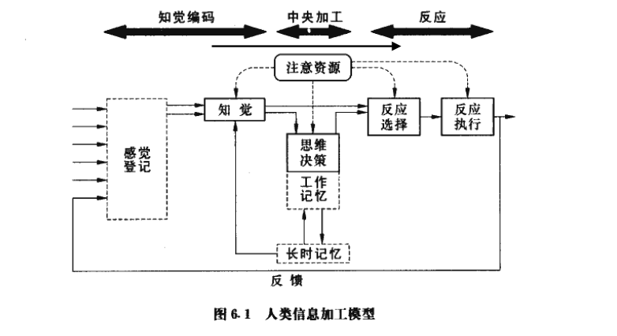
Selective Attention
通道的选择性注意主要受下面因素的影响
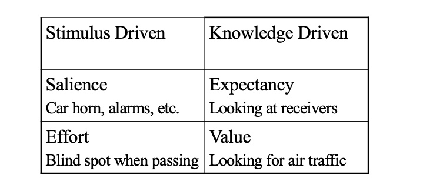
Three aspects of perception
- Sensory based
- Bottom-up feature analysis
- clear stimuli/minimize sensory similarities
- Bottom-up feature analysis
- Memory based
- Unitization
– perceive grouped features as a whole (Gestalt) - Top-down [correct guesses & fill-ins]
- Unitization
working memory
- working memory
- long term memory
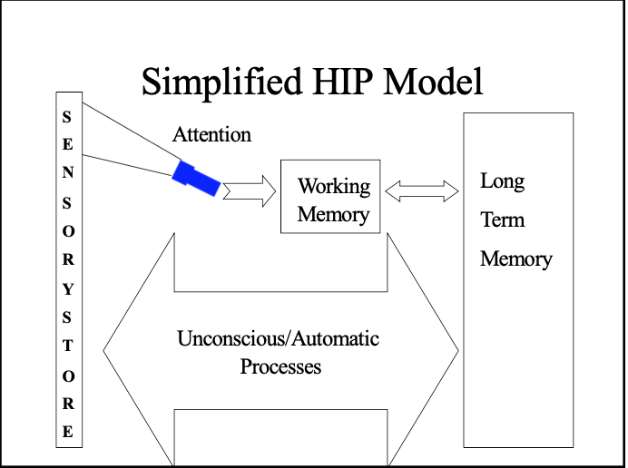
90’s model (nods to Baddeley & Schneider)
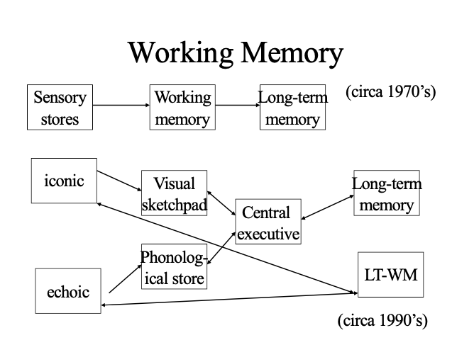
- Central executive
- Coordinate multiple tasks (OS)
- Hold & manipulate info from LTM (RAM)
- Control retrieval strategies from LTM (data
access) - Attend selectively to stimuli (time share)
- 协调两个存储子系统
- Visual sketchpad
- 以模拟的，空间的形式保持正在使用的信息
- Phonological store
- 存储以声音的形式存在的信息
Human Error and Reliability
- Understanding Mechanisms underlying human error
- What types of errors can be predicted?
- Proficiency in information-related skills: Analysis Perform THERP analyses to predict errors for a design/task
Error
- Any act with adverse consequences
- An act resulting from an inappropriate intention
- Keeping the pressurizer level under control
Action Schema
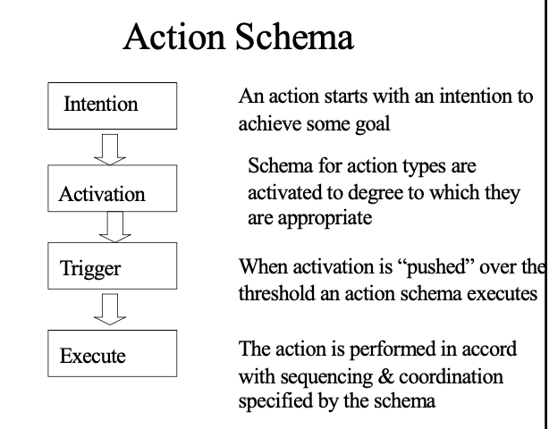
- Intention
- mode errors
- description errors
- Activation
- capture errors
- data-driven
- associative activation
- loss of activation
- sequence error
- Faulty Triggering
- Out of sequence and “mangled” execution..
Reliability Engineering
- The Key to reliability is Redundancy
Components in Series
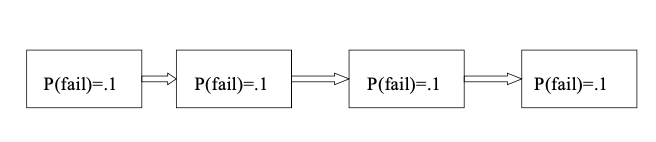
Components in Parallel
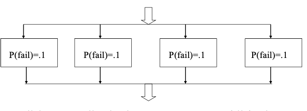
Tradeoffs (Redundant or not)
How redundancy works
For the mathematics to work out the probabilities of failure for redundant components or subsystems must be completely independent
What Reliability Engineers do
- The primary task of a reliability engineer is to defend redundancy against unexpected violations of independence.
- In a well designed system only the human operator bridges these islands of independence
THERP
- Quality control method for estimating errors
- Model
- Errors: such as reading or omitting an instructional step, or choosing the wrong switch, are presumed to occur at constant rates
- If tasks can be broken down into subtasks for which errors can be predicted, then the probability of the successful completion of the overall task can be predicted
- The probability of successfully completing the task (if its something like warhead assembly) is then simply the joint probability that everything is done correctly
Points on THERP analyses
- Tree is not sacrosanct but a convenient way to organize independent tasks
- Probabilities for errors and recoveries should be entered into trees at level of aggregation at which independence holds
- Method is ultimately simply a way to make our commonsense about the likelihood of failing more explicit
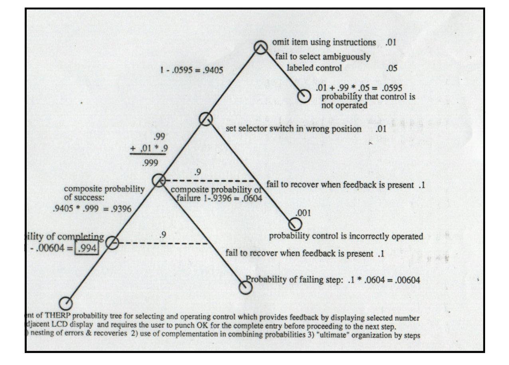
Human-Computer interaction
- Understand basic assumptions and mechanics of constructing GOMS keystroke level model
- Contrast the HIP vs. Ecological vision of problems in HCI
- Standard visualizations and the problem(s) they solve- finding context for local views
GOMS Models
用于设计的用户绩效模型
- Goals
- Operators
- Methods
- Selection rules
用户可以通过方法和选择形成他们要达到的目标和子目标。方法是一系列知觉的、认知的或行为操作的步骤。
步骤
- 列出目标和子目标
- 明确达到问题的方法
- 写出选择关系
- 揭示问题
Norman’s 7 Stages & design
用户导向界面设计的七阶段理论
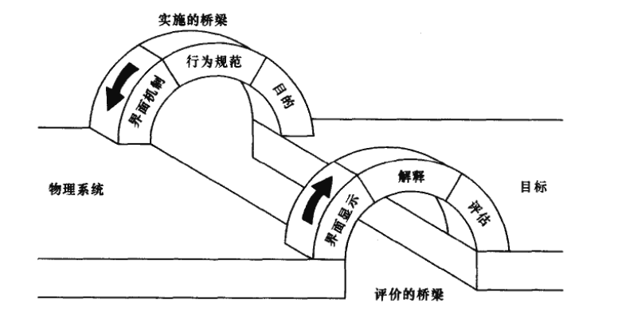
- 实施的鸿沟：用户的目的和软件所支持的行为之间的错误匹配（通过好的人因学方案解决，input tracking position）
- 评价的鸿沟：用户期望与系统状态的不匹配 (好的说明性显示)
Mplications of working memory & absolute judgment limitations
- Recognition is MUCH easier than Recall :Make the objects of working memory available to perception..
The Power Law of Practice
Improvement in performance is logarithmic in the N of trials
Mental Models
跨越实施和评价的鸿沟依赖于心理模型，好的心理模型可以帮助房主错误和改进绩效
- Allows people to make predictions about how things will work
- Mental models are often wrong
Conceptual Models
使用户看不见的部分变为可见 比如”房间”
State Transition Models of Devices
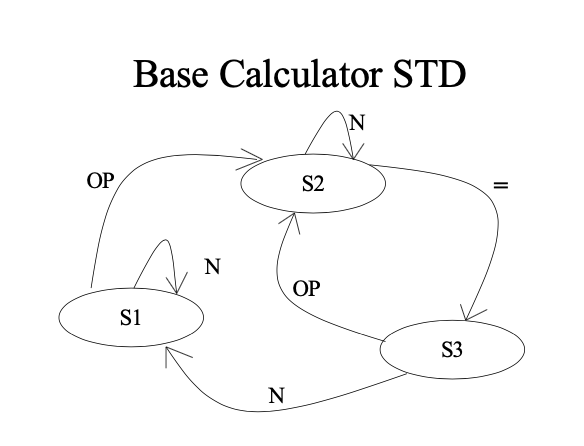
Speech
- Theoretical Understanding: Problems in building applications using speech recognition Design
- Strategies for getting good performance despite poor recognition
- Theoretical Understanding: Computer supported cooperative work
- Theoretical Understanding: Design Strategies for using sensors to augment human inputs and improve interaction
Basic Speech Parameters
- Speaker Dependent/Independent
- Size/Type of Vocabulary
- Isolated word vs. Continuous Speech
- Grammar/constraint
- Environment/noise tolerance
- Noise canceling unidirectional microphones
– Quiet environments
Rec System maximizes chance of getting things right by
- Restricting vocabulary
- Specifying order & transitions for recognition
- Associating actions/meaning with partial recognition of phrase
- Use of context particularly within dialog to adjust constraints
Lombard Effect
During noise, speakers have an automatic normalization response that causes systematic speech modifications, including increased volume, reduced speaking rate, and changes in articulation and pitch.
Issues in Ubicomp
Issues in Ubicomp
- Context
- Uneven conditioning
- Inferring user intent
- System interoperation
Decision Making & Diagnosis
Learning Objectives
- Theoretical Understanding: Normative vs. Behavioral theories of decision making
- Models of decision making in diagnosis Name & illustrate standard fallacies in decision making
Rational Decision Making
- A rational decision maker is one who chooses the alternative which maximizes his expected utility.
- A rational decision maker is presumed to maximize her Subjective Utility which is likely to be some function of objective
Prospect theory
Loss hurts more than Gain helps （抛硬币，正面赢20，反面输 10，大多数人选择不玩）
Base Rate Fallacy
Undervalue base rates!!
Behavioral Decision Making
- Treate extreme values as more moderate （感知不到极端数值，就比如考试明明只剩三天，但还觉得时间很充裕不好好看hf）
- Imperfections in memory （记忆缺陷， 不能收集到所有过去的信息帮助做决策，比如期中复习hf就十分紧张期末还是这样）
- Inability to do complex math in our heads （做不了复杂算数）
Gambler’s Fallacy
Error: treating independent events as though they were dependent
Availability heuristic可得性偏差
人们做决策总会基于 avaliability & imaginability
Imaginability
Confirmation bias
确定偏差:简而言之就是听不进新的观点，无论怎样论证都是认为自己原本认为的是对的， 本质还是overconfidence
例如：给一些本身对于某件事有观点的人接受正反两面信息，人们通常都只注意到支持自己观点的理论，暗中反驳不符合自己观点的理论
Representativeness bias 代表性偏差
人类在对事件做出判断的时候，过度关注于这个事件的某个特征，而忽略了这个事件发生的大环境概率和样本大小。
例如，你看到一家公司连续3年利润都翻番，然后立即对它的股票做出判断——买！错在代表性偏差。连续3年利润翻番，是一个好公司的代表性特征。但这并不意味着这家公司真的就是一家好公司，这家公司还有好多信息都被你忽略掉了。比如说，业绩可能是有意调整出来的；再比如说，这家公司未来的盈利机会消失，业绩不能持续。
Anchoring锚定效应
人们在对某人某事做出判断时，易受第一印象影响从而先入为主